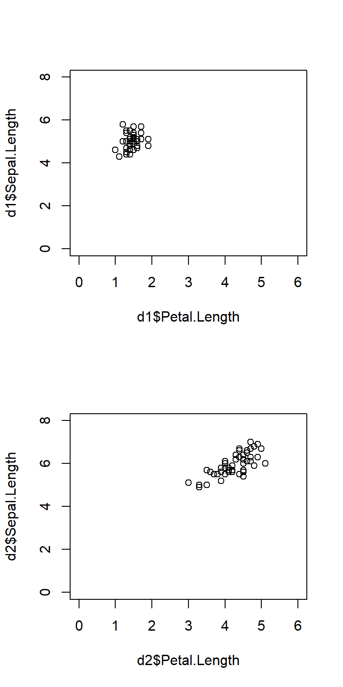
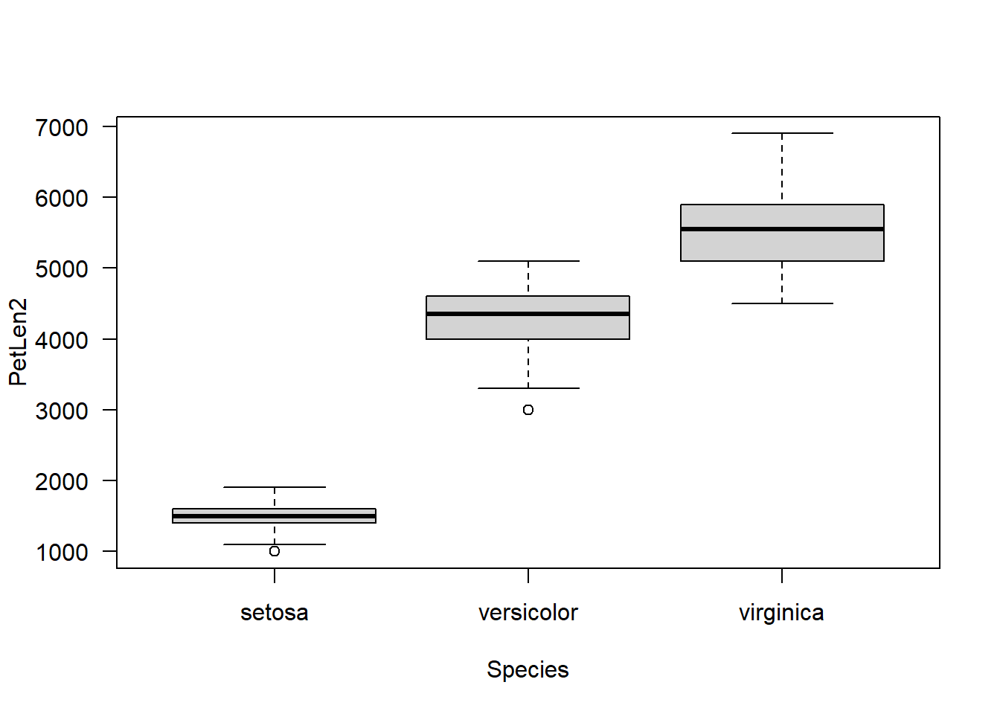
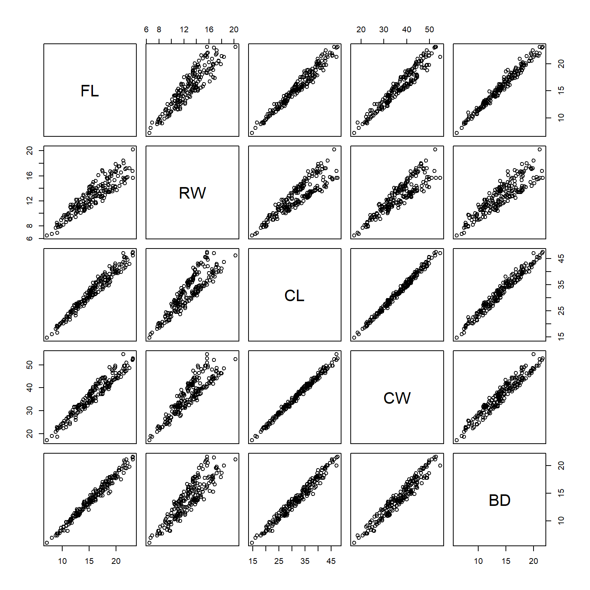
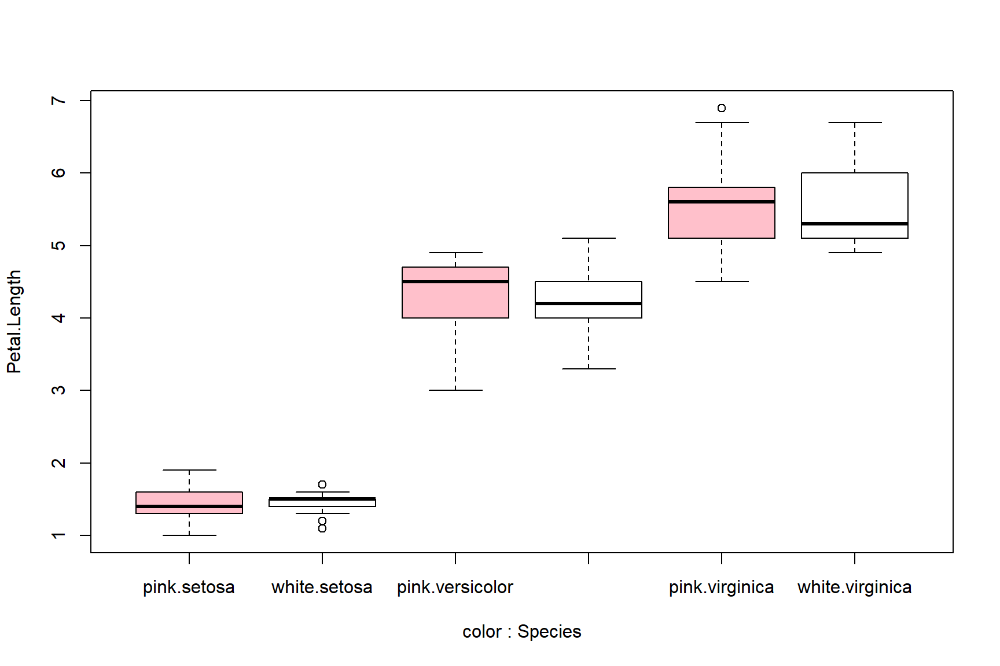
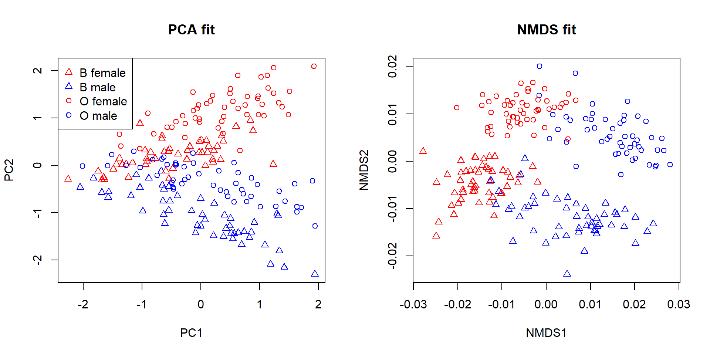
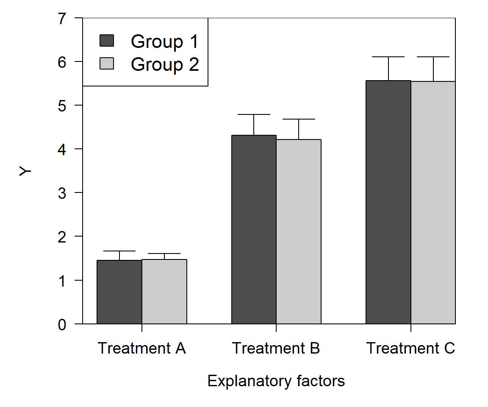
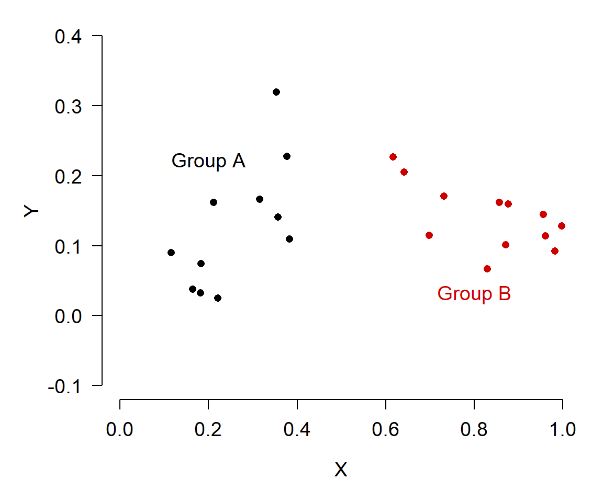

Module 6 Exploratory data analysis 3: Multivariate data exploration
So far in this course we have explored ways to explore distributions of single variables: histograms, ECDF plots, probability density plots, and so on. On this page we will explore ways to explore relationships between variables. This is a vital preliminary step in studying how two or more variables might be correlated with each other, or how one might cause the other. The focus on this page is on exploratory, correlative methods. Actual inference about relationships between two variables is better handled by linear models (LM), generalized linear models (GLM), or other kinds of models. This page also contain a brief introduction to ordination, which can help identify patterns in datasets with many variables. A more complete presentation of ordination can be found in Module 13.
6.1 Scatterplots for 2 continuous variables
The scatterplot is one of the most important tools in the biologist’s data toolbox. It is probably the simplest type of figure in routine use: simply plot the values in one variable on one axis, and the values of another variable on another (perpendicular) axis. The role of the scatterplot in exploratory data analysis is to help visualize the form of the relationship between two variables (Bolker 2008). The figure below shows just 6 of the possible curve types that you might discover.

6.1.1 R plotting basics
We have already made some scatterplots, but it’s worth taking a closer look at the R methods for scatterplots. The basic function for scatterplots is plot(). The first argument is taken to be the x coordinates, and the second argument to be the y coordinates. You can also use the formula interface (y ~ x), but the coordinates method (x, y) usually makes for cleaner code.
Calling plot() does two things: first, it creates a new plot; second, it plots the data on the new plot area. Other components can be added to the plot with subsequent commands: points() for points, text() for text, lines() for lines, polygon() for polygons, segments() for line segments, and so on. These functions will add to an existing plot, but will not create a new plot area. So, call plot() first, then points() or one of the others if needed. Calling points() or one of the “adding” functions if there is not already an active plot area will return an error.
Here is a basic scatterplot:

The default scatterplot is rather unattractive, but works just fine for exploring data. Fortunately, almost every aspect of a plot can be customized using different plot arguments and graphical parameters. Here are some commonly used plot options:
plot(iris$Petal.Width,iris$Petal.Length,
xlab="Petal width (cm)", # x label
ylab="Petal Length (cm)", # y label
xlim=c(0,3), # x axis limits
ylim=c(0,8), # y axis limits
main="Petal length vs. petal width" # plot title
)#plotSometimes it helps to change the color or style of points to show categories in the data. This can be done using some arguments to plot():
pchchanges the symbol used for points. Think “point character”. See?pointsfor a list of available symbols.cexchanges the size of symbols. Think “character expansion”. The defaultcexis 1; other values scale the points relative to this. E.g.,cex=2makes points twice as large.colchanges the color. Think “color”.R can produce many colors; run the commandcolors()to see a named list56.
Each these arguments can take vector of values, so you can assign colors or shape to each point. The values will be used in the same order as the observations used to draw the points (e.g., rows of a data frame). I find it convenient to put colors, shapes, and other point-specific graphical parameters into the dataframe that contains the coordinates. That way, if I ever subset the data frame, or sort the data frame, the symbology information stays with each point.
The examples below illustrate several ways of assigning symbology to observations within a data frame. In the first, ifelse() is used to make vectors of colors (use.col) defined by the variable species. Notice that a legend is provided to tell the reader which symbols mean what. This method works fine if you only have a few groups to define symbols for.
# method 1: ifelse()
iris$color <- ifelse(iris$Species == "setosa", "black",
ifelse(iris$Species == "versicolor", "red", "blue"))
plot(iris$Petal.Width,iris$Petal.Length,
col=iris$color, # color by species
pch=16 # solid dots
)
legend("bottomright",
legend=c("Setosa", "Versicolor", "Virginica"),
pch=16, col=c("black", "red", "blue"))A better way is to first set up a vector of colors, then name the elements of the vector, and finally use those names to assign colors to rows of the data frame. This is the method I use in my code, and recommend you do too. When getting a vector of colors, I often use colorbrewer2 (date accessed 2024-08-22). Notice in the legend() code below that we don’t have to retype the species names or colors because they are already in the object spps and cols.
# method 2: match()
## get the species names
spps <- sort(unique(iris$Species))
## vector of colors
## can also use rainbow() or colorbrewer2.
cols <- c("blue", "yellow", "purple")
## assign names to colors
names(cols) <- spps
## assign to data frame
iris$color <- cols[iris$Species]
## use the new colors in a plot:
plot(iris$Petal.Width,iris$Petal.Length,
col=iris$color, # color by species
pch=16 # solid dots
)
legend("bottomright", legend=spps, pch=16, col=cols)
Below is an example of using shapes (use.pch) to define groups. See the help page for points() (?points) to see the available plot symbols. In my plots I usually use both shape and color to define groups.
# method 3: names()
spps <- sort(unique(iris$Species))
shps <- c(15, 16, 17)
names(shps) <- spps
iris$pch <- shps[iris$Species]
plot(iris$Petal.Width,iris$Petal.Length,
pch=iris$pch, col=iris$color)
legend("bottomright", legend=spps, pch=shps, col=cols)
You can think of the plot generated by plot() like a canvas. Once the canvas is in place, things can be “painted” on, but like paint cannot be removed. If you want to remove something, you’ll need to remake the plot without it. You can also just comment out the command you don’t want.
plot(iris$Petal.Width,iris$Petal.Length,
pch=iris$pch, col=iris$color)
legend("bottomright", legend=spps, pch=shps, col=cols)
text(1.5, 5, "Flowers!", cex=4, col="red")There’s no way to remove the offending text: R doesn’t have an “Undo” button! Our only option is just to remake the plot without the text.
# remake without the offending text:
plot(iris$Petal.Width,iris$Petal.Length,
pch=iris$pch, col=iris$color)
legend("bottomright", legend=spps, pch=shps, col=cols)
Sometimes I’ll just comment out the plot component that needs deleting; this way it is easier to add back in later. I do this a lot when I’m trying to iteratively build a figure with lots of components.
6.1.2 Graphical parameters and advanced plots with par()
Many options that affect plots can only be set using the par() function. Take a look at the par() help page to get a sense of the variety of options available (?par). It is important to keep in mind is that once par() options are set in an R session, they will stay that way until you change them using par() again. So, if you are making multiple figures within the same R workspace or work session you will need to pay attention to what you have done. You can always see all current settings by running the command par().
Below is an illustration of using par() to change graphics options:
Without par():
plot(iris$Petal.Length~iris$Sepal.Length,
xlab="Sepal length (cm)",
ylab="Petal length (cm)",
xlim=c(0,8),ylim=c(0,8))With par(), we can do the following:
- Narrow the margins (
mar) so the plot takes up more of the figure space - Remove the box (
bty) because it is unnecessary - Turn y-axis numbers to horizontal (
las) so they are easy to read - Bring axis labels in closer (
mgp) to save space - Set size of axis text (
cex.axis) and labels (cex.lab) for legibility
par(mar=c(4.1, 4.1, 1.1, 1.1), # margin sizes
bty="n", # no box around plot
las=1, # axis labels in reading direction
mgp=c(2.25, 1,0), # position of axis components
cex.axis=1.2, # size of axis numbers
cex.lab=1.2) # size of axis titles
plot(iris$Petal.Length~iris$Sepal.Length,
xlab="Sepal length (cm)",
ylab="Petal length (cm)",
xlim=c(0,8),ylim=c(0,8))
We will use par() often in this course to clean up figures and make them more attractive. Most of the time when you are exploring data you won’t need to mess with par() (except for making multi-panel figures). But, you should definitely use par() when preparing figures for presentations or publications. Proper use of par() is the key to making clean, informative, and professional-looking figures.
6.1.2.1 Multi-panel figures with par()
One of the most common ways to use par() is to make multi-panel figures. The panels are specified in terms of the number of rows and columns in the figure. The arguments mfrow and mfcol define the panel layout.
mfrow: you supply the number of rows and number of columns, in that order.mfcol: works the same way, but in reverse: supply the number of columns and number of rows, in that order.
Once you set mfrow or mfcol (but never both), a new plot area within the graphics window will be produced each time you call plot(). The graphics window will be divided evenly according to the number of panels you requested (e.g., mfrow=c(2,3) will yield 6 panels). Panels are drawn by row and then by column (with mfrow) or by column and then by row (with mfcol).
If you produce more plots than you have “slots” specified by mfrow or mfcol, the graphics device will be cleared and the plot panels will be filled again, in the same order as before. So, if you set mfrow=c(2,2), and then make 5 plots, you will end up with a graphics window that has 1 plot (the fifth) in the upper left corner.
The example below shows the use of par()$mfrow to make a 2 \(\times\) 2 figure.
par(mfrow=c(2,2), # layout
mar=c(4.1,4.1,1.1,1.1), # margin sizes
bty="n", # no box around plot
las=1, # rotate axis text
cex.axis=1.2, # axis text size
cex.lab=1.2) # label text size
hist(iris$Petal.Length, main="Plot 1")
hist(iris$Petal.Width, main="Plot 2")
hist(iris$Sepal.Length, main="Plot 3")
hist(iris$Sepal.Width, main="Plot 4")
When making multi-panel plots, it helps to line up axes that correspond to each other. The commands below show two separate figures with aligned axes. This can be helpful when showing different responses to the same explanatory variable (the 2 \(\times\) 1 figure):
par(mfrow=c(2,1), # layout
mar=c(4.1,4.1,1.1,1.1), # margin sizes
bty="n", # no box around plot
las=1, # rotate axis text
cex.axis=1.2, # axis text size
cex.lab=1.2) # label text size
plot(iris$Petal.Length, iris$Sepal.Length)
plot(iris$Petal.Length, iris$Sepal.Width)
The figure below is a 1 \(\times\) 2 figure that shows how a single response variable relates to two different predictors.
par(mfrow=c(1,2), # layout
mar=c(4.1,4.1,1.1,1.1), # margin sizes
bty="n", # no box around plot
las=1, # rotate axis text
cex.axis=1, # axis text size
cex.lab=1) # label text size
plot(iris$Petal.Width, iris$Petal.Length)
boxplot(iris$Petal.Length~iris$Species)
Sometimes you may need to manually set axis limits to make sure that the panels line up exactly.
# example with X and Y axes not aligned:
d1 <- iris[which(iris$Species == "setosa"),]
d2 <- iris[which(iris$Species == "versicolor"),]
par(mfrow=c(2,1))
plot(d1$Petal.Length, d1$Sepal.Length)
plot(d2$Petal.Length, d2$Sepal.Length)
Here’s the same plot, but with the axes lined up by setting the axis limits with xlim and ylim.
# same plot but with axes lined up:
par(mfrow=c(2,1))
plot(d1$Petal.Length, d1$Sepal.Length, xlim=c(0,6), ylim=c(0,8))
plot(d2$Petal.Length, d2$Sepal.Length, xlim=c(0,6), ylim=c(0,8))
The argument mfcol to par() works similarly to mfrow, but on columns instead of rows. For mfcol you supply the number of columns, then the number of rows. Likewise, panels are filled by column first instead of row first. The panel layout mfrow=c(2,3) is the same as mfcol=c(3,2), but the panels will be filled in a different order:

Whether to use mfrow or mfcol is usually a matter of preference. Clever use of one or the other can allow you to automatically make multi-panel plots in a preferred layout from data stored in a list or indexed by a vector.
One last thing about multi-panel plots: the plot() function both creates new panels and creates plots within each panel. Part of this process is defining the coordinate system for a panel. When you make a plot, subsequent commands that add elements to plots such as points(), abline(), legend(), etc., will use the coordinate system of the most recent panel. Think about this when designing complicated figures. The example below demonstrates how a legend is placed according to the coordinate system of the most recently-created plot.
6.1.3 Really advanced plotting
6.1.3.1 plotmath() and expressions
Very often we need to present special symbols on our figures, including mathematical symbols and Greek letters. The R function that does this is plotmath(). This function allows very precise specification of special symbols with a relatively straighforward syntax. See the help page (?plotmath) to see some of the symbols that are available. The downside of using plotmath() is that it usually works within expression(), which can be a horrendous pain in the neck.
The examples below demonstrate some common plotmath() uses.
6.1.3.1.1 Symbols in axis labels
The degree symbol is very common: it is used for temperature and geographic coordinates. As such, biologists should be able to use it in their figures. The example below shows how. The axis labels are provided as “expressions”, which R will parse into text. Inside expression(), the ~ symbol produces a space, and the * symbol will put two text things together with no space between them.
# made up data
x <- runif(100, 0, 89)
y <- -0.4*x+39 + rnorm(100)
plot(x, y,
xlab=expression(Latitude~(degree*N)),
ylab=expression(Daily~temperature~(degree*C)))Biologists also sometimes have to deal with chemistry, and that means subscripts (and maybe superscripts). These can also be made with plotmath() and expression(). In the y-axis label below, the left superscript for the isotope is made as an exponent to an invisible or “phantom” character with phantom(0)57. The equation printed in the plot area shows that plotmath() expressions work equally well in any function that puts text on a plot–like text()–and how to add italics.
6.1.3.2 Adding pictures to plots
Sometimes it’s nice to supplement a figure with an external image such as your focal organism. There are several ways to do this. The easiest way is to use an image stored locally. The example below uses an image of a flower (Caladenia gracilis) from Phylopic. This website hosts many 1000s of free-to-use images of organisms, organized by taxonomy and phylogeny. This particular image was created by Michael Scroggie and is in the public domain. If you ever use an image, make sure to acknowledge the source!
First, download the image and put it in your R home directory. Then, import the image using the appropriate package (usually jpg or png). Then, use the rasterImage() function to position the image on your plot. rasterImage() takes four coordinates: xleft, ybottom, xright, ytop, in that order.
library(png)
im.name <- "iris_image.png"
im <- readPNG(im.name, native=TRUE)
# make a plot
plot(iris$Petal.Length, iris$Sepal.Length)
# add image
rasterImage(im, 2,6.5,3,8)
The uses of this are endless. One interesting option is to use an image as an icon (instead of say, points). The code below is crude but it works.
library(png)
im.name <- "lizard_image.png"
im <- readPNG(im.name, native=TRUE)
# make a plot
n <- 20
x <- runif(n, 1, 20)
y <- runif(n, 1, 10)
# make a blank plot:
plot(x, y, type="n")
# add image to each point in a loop
# may need to adjust dimensions and multiplier
# for aspect ratio
dims <- dim(im)
im.size <- 2 #(width in units of x axis)
xoff <- (dims[1]/dims[2])*im.size/2
yoff <- (dims[1]/dims[2])*im.size/2
# add the images in a loop with one step
# for each point
for(i in 1:n){
rasterImage(im, x[i]-xoff, y[i]-yoff, x[i]+xoff, y[i]+yoff)
}
I don’t know if a journal editor will let you get away with using lizards as points, but it’s nice to know that you can.
6.1.3.3 Fun with axes
6.1.3.3.1 Custom axes
The function axis() adds an axis to a plot. The main arguments are, in order, the side on which to put the axis; the values at which to put tick marks; and optionally the labels to put on the tick marks. Like most graphics functions, axis() adds to an existing plot region in the current coordinate system. This means that if you want to put a custom axis on a plot, it’s best to suppress the axis that is created automatically by plot(). This is done with argument (to plot()) xaxt="n" for the x-axis or yaxt="n" for the y-axis. Think of these as setting “X AXis Type” or “Y AXis Type” to “none”.
The side on which to put an axis is one of 1, 2, 3, or 4, counting clockwise from the bottom. I.e., side 1 is the bottom (x-axis), side 2 is the left (y-axis), and so on.
The locations for the tick marks (at) are in the coordinate system of the current plot. This is important to keep in mind if you are dealing with data on a transformed scale such as the log scale.
# step 1: make a plot and suppress the axis you
# want to customize
plot(iris$Petal.Length, iris$Sepal.Length,
xaxt="n")
# step 2: make the custom axis
axis(side=1, at=1:7) If you don’t specify axis labels, then R will use the values specified for the tick marks. These are usually okay, unless you want a specific number format or number of decimal places. In such cases you can add labels as text strings or numbers. The number of labels must match the number of tick marks (or, their lengths must be compatible via the recycling rule).
6.1.3.3.2 Logarithmic axes
In biology we often plot values on a logarithmic scale. There are a couple of ways to do this in R.
Method 1
Use argument log= to plot(). You can specify "x", "y", or "xy".

Notice how the tick marks are unevenly spaced? This is because they are on the log scale.
Method 2
The second method is to plot log-transformed values, and add axes manually. This method is a little more work than method 1, but I find it works better for making publication-quality figures. This method shows the degree of granularity and precision possible with R base graphics.
# toy data on log10 scale
set.seed(123)
x <- rnorm(20, 0, 1)
y <- 1+1.02*x+rnorm(20)
# make
plot(x,y, xaxt="n", yaxt="n", xlim=c(-2, 2))
# make sequence of x axis values
xtick <- seq(-2, 2, by=1)
ytick <- seq(-1, 3, by=1)
axis(side=1, at=xtick, labels=10^xtick)
axis(side=2, at=ytick, labels=10^ytick)
# add little ticks for values between powers of 10
# argument tcl controls length of tick mark (-0.5 is default)
axis(side=1, at=log10(c(2:9/100, 2:9/10, 2:9, 2:9*10)),
labels=NA, tcl=-0.3)
axis(side=2, at=log10(c(2:9/10, 2:9, 2:9*10, 2:9*100)),
labels=NA, tcl=-0.3)One thing to watch out for is the base of the logarithm used for plotting. By default, R uses the natural log (base e). But, we usually want to show base 10 because it’s more interpretable. This means that you need to keep track of which values are on the original scale, which values are on the natural log scale, and what the corresponding \(log_10\) values are.
6.1.3.3.3 Extra axes
It is possible, but rarely advisable, to put additional axes on a plot. The reason that additional axes are generally not a good idea is that it is very easy to mislead your reader (and yourself!). But, if you insist, here is how to add a second y-axis to a plot. The secret is to create a new, invisible plot on top of the first plot using par(new=TRUE). This new plot will use the already existing plot area, but will have its own coordinate system. In the example below, we expand the right margin to 5.1 (the fourth value in mar) to make room for the right axis label. The label itself is added with mtext() (short for “margin text”).
par(mar=c(5.1, 5.1, 1.1, 5.1))
plot(iris$Petal.Length, iris$Sepal.Length)
par(new=TRUE)
plot(1:10, runif(10), col="red", pch=15,
xaxt="n", yaxt="n", # suppress axes
xlab="", ylab="", # suppress axis titles
ylim=c(0, 1))
axis(side=4, at=seq(0, 1, by=0.25), col="red", col.axis="red")
mtext(side=4, "Price of tea in China", line=3, col="red")
6.1.3.3.4 Finer points of axis labels {*mod-06-axes}
Informative axis labels are essential for good data graphics. However, sometimes R can make it hard to get your axes displayed correctly. The two most common issues I encounter are (1) axis values not rendering due to space constraints; and (2) axis titles overlapping with axis values.
Axis values not rendering
Consider the plot below. Sope of the axis labels are not rendering, presumably because there isn’t enough room. Try resizing the plot yourself in your R window to verify this.
# add a fake variable
iris$color <- c("blue", "violet")
boxplot(Petal.Length~Species+color, data=iris)
The solution is add the missing labels manually, by making a second x-axis with the labels we need. For boxplots, this is easy, because the x-coordinates of the tick marks start with 1 on the left and increase by 1 with each tick mark to the right.
boxplot(Petal.Length~Species+color, data=iris)
axis(side=1, at=c(2,4,6),
labels=c("versicolor.blue", "setosa.violet", "virginica.violet"))The resulting figure is still less than satisfying, because the labels overlap. We have several options. One is to reduce the text size by setting par()$cex.axis to something smaller. However, this can result in very small axis labels.
Another option is to put your axis values on 2 lines. We can accomplish this in two ways. One way uses the \n “new line” character. The other way involves making two axes.
# method 1: use new lines
# may need to adjust par()$mgp
par(mgp=c(3,1.5,0))
xlabs <- c("setosa\nblue", "versicolor\nblue", "virginica\nblue",
"setosa\nviolet", "versicolor\nviolet", "virginica\nviolet")
boxplot(Petal.Length~Species+color, data=iris, xaxt="n") # suppress x axis
axis(side=1, at=1:6, labels=xlabs)Here is the same plot, but using a second x axis
spps <- sort(unique(iris$Species))
boxplot(Petal.Length~Species+color, data=iris, xaxt="n") # suppress x axis
axis(side=1, at=1:6, labels=rep(spps, times=2))
par(mgp=c(3, 2, 1))
axis(side=1, at=1:6, labels=rep(c("blue", "violet"), each=3), line=0)We can also reposition axis titles. The most common reason to do so is that they overlap with axis values. Consider this plot:

Notice how the y-axis title almost touches the y-axis numbers? We can fix that by making a custom y-axis title with title(), and expanding the left margin a bit with ’par()$mar`.
par(mar=c(5.1, 5.1, 1.1, 1.1), # bottom, left, top, right
las=1)
boxplot(PetLen2~Species, data=iris, ylab="") # suppress y title
title(ylab="Petal length (cm)", line=4)We can accomplish something similar with par()$mgp. This sets the positions (in lines from the edge of the plot) of the (1) axis titles, (2) axis values, and (3) axis line. The downside is that this affects all axes, not just the one we want to fix.
6.2 Scatterplot matrices for many variables
A scatterplot plots one variable against another, and is probably the best way to see the relationship (if any) between two variables. But what if you have many variables? Making dozens of scatterplots can be tedious and time consuming. A scatterplot matrix makes many scatterplots at once, allowing relationships between many variables to be visualized at once. The base function to do this is pairs().
# load some data
data(crabs, package="MASS")
# make a spare copy
x <- crabs
# define columns for scatterplot matrix
dat.cols <- 4:8
# make scatterplot matrix
pairs(x[,dat.cols])
In the scatterplot matrix, every variable is plotted against every other variable. Variables are labeled on the diagonal. E.g., the plots in the first row have “FL” as their y-axis, and “RW”, “CL”, “CW”, and “BD” as their x-axes. Likewise, plots in the first column have “FL” as their x-axis, and “RW”, “CL”, “CW”, and “BD” as their y-axes.
One common modification to the default pairs() plot is to replace scatterplots above the diagonal with correlation coefficients. Another modification is to add linear regression or LOESS58 lines to the lower plots to help highlight the relationships. The function below is adapted from the help page for pairs(). Notice that the size of the text for each coefficient is scaled to the magnitude of the coefficient. Can you figure out what piece of the code is doing that?
# define a function to add correlation coefficients
panel.cor <- function(x, y, digits = 2, prefix = "", cex.cor, ...)
{
#usr <- par("usr"); on.exit(par(usr))
par(usr = c(0, 1, 0, 1))
r <- cor(x, y)
txt <- format(c(r, 0.123456789), digits = digits)[1]
txt <- paste0(prefix, txt)
if(missing(cex.cor)) cex.cor <- 0.8/strwidth(txt)
text(0.5, 0.5, txt, cex = 2*abs(r))
}
# example of use:
pairs(x[,dat.cols],
lower.panel=panel.smooth,
upper.panel=panel.cor, gap=0)Sometimes the Spearman rank correlation coefficient \(\rho\) is more informative than the Pearson linear correlation coefficient r. The function panel.cor() can be modified to use \(\rho\) instead of r:
panel.cor2 <- function(x, y, digits = 2, prefix = "", cex.cor, ...)
{
par(usr = c(0, 1, 0, 1))
r <- cor(x, y, method="spearman")
txt <- format(c(r, 0.123456789), digits = digits)[1]
txt <- paste0(prefix, txt)
if(missing(cex.cor)) cex.cor <- 0.8/strwidth(txt)
text(0.5, 0.5, txt, cex = 2*abs(r))
}
# example of use:
# (might return warnings but these are ok)
pairs(x[,dat.cols],
lower.panel=panel.smooth,
upper.panel=panel.cor2, gap=0)
6.3 Lattice plots for hierarchical data
In another module we will explore mixed models, also known as hierarchical models, which can account for relationships that differ between groups of data. These are similar in some ways to analysis of covariance (ANCOVA) models with interactions. An example of what ANCOVA can look like is shown below:

In the left panel, the Y variable increases as a function of the X variable. There is also an effect of the group variable (i.e., a factor): Y values in group 2 are on average greater than values in group 1. This is called “main effects” ANCOVA. In the right panel, Y increases with X, and the slope of Y with respect to X varies between groups. In other words, X has a greater effect on Y in group 2 than in group 1. This is called an “interaction” between X and the grouping variable. Analyses that include such interactions are sometimes called “interaction effects” ANCOVA because the effects of one variable “interact with” the effects of another variable. Both types of ANCOVA are extremely common in biology.
One key difference between an ANCOVA model and a mixed model is that while in ANCOVA the slope and intercept are fitted specifically to each level of the grouping variable, consuming degrees of freedom, in a mixed model these slopes and intercepts are considered to be drawn from a random distribution. For now, all you need to understand is that the relationship between response and predictor variables can differ between groups. A lattice or trellis plot is a way to visualize such differences. In R these are named for package lattice which is an older package for producing hierarchical plots. The newer ggplot2 package can also do the job.
library(lattice)
# scatterplot of 2 continuous variables
# by species
xyplot(Petal.Length ~ Sepal.Length | Species, data=iris)Lattice plots can group observations by more than one variable, as shown below.
# add another (pretend) variable
x <- iris
x$color <- c("purple", "white")
xyplot(Petal.Length ~ Sepal.Length | Species+color, data=x)
Functions in lattice can also produce hierarchical boxplots. This is the graphical equivalent of aggregating by more than one variable.
The tidyverse / ggplot2 equivalent to the first lattice plot above is:
## Warning: package 'ggplot2' was built under R version 4.3.3ggplot(data=x) +
geom_point(mapping=aes(x=Sepal.Length, y=Petal.Length)) +
facet_wrap(~Species, nrow=1)
# same plot, different layout:
ggplot(data=x) +
geom_point(mapping=aes(x=Sepal.Length, y=Petal.Length)) +
facet_wrap(~Species, nrow=2)
# same plot, another layout:
ggplot(data=x) +
geom_boxplot(aes(y=Petal.Length, x=color)) +
facet_wrap(~Species,nrow=2)Whether you use lattice or ggplot2 to make your hierarchical graphs is largely a matter of personal preference. Both packages work just fine for exploratory data analysis. Both share the advantage of being very fast, with the ability to represent a lot of data with very little “ink” and code. Both share the disadvantage of being tricky to customize because many of the graphical options are “hidden” inside layers of other functions.
If you need to present a hierarchical plot in a presentation or manuscript, and need to meet very specific formatting requirements, you may need to make your figure using base graphics. The commands below reproduce the figures above in base graphics. Note that while using base graphics requires more coding to get the same result, it can be much easier to customize the plots because the plotting options are not buried inside other functions.
flag1 <- which(x$Species == "setosa")
flag2 <- which(x$Species == "versicolor")
flag3 <- which(x$Species == "virginica")
par(mfrow=c(2,2), mar=c(5.1, 5.1, 1.1, 1.1),
las=1, lend=1, bty="n",
cex.lab=1.3, cex.axis=1.3)
plot(x$Sepal.Length[flag1], x$Petal.Length[flag1],
xlim=c(4, 8), ylim=c(0, 8),
xlab="Sepal length", ylab="Petal length")
title(main=expression(italic(Iris)~italic(setosa)))
plot(x$Sepal.Length[flag2], x$Petal.Length[flag2],
xlim=c(4, 8), ylim=c(0, 8),
xlab="Sepal length", ylab="Petal length")
title(main=expression(italic(Iris)~italic(versicolor)))
plot(x$Sepal.Length[flag3], x$Petal.Length[flag3],
xlim=c(4, 8), ylim=c(0, 8),
xlab="Sepal length", ylab="Petal length")
title(main=expression(italic(Iris)~italic(virginica)))
Here is the base graphics version of the hierarchical boxplot:
par(mfrow=c(2,2), mar=c(5.1, 5.1, 1.1, 1.1),
las=1, lend=1, bty="n",
cex.lab=1.3, cex.axis=1.3)
boxplot(Petal.Length~color, data=x[flag1,],
xlab="Color", ylab="Petal length",
ylim=c(0, 8))
title(main=expression(italic(Iris)~italic(setosa)))
boxplot(Petal.Length~color, data=x[flag2,],
xlab="Color", ylab="Petal length",
ylim=c(0, 8))
title(main=expression(italic(Iris)~italic(versicolor)))
boxplot(Petal.Length~color, data=x[flag3,],
xlab="Color", ylab="Petal length",
ylim=c(0, 8))
title(main=expression(italic(Iris)~italic(virginica)))
6.4 Continuous variables by group
One of the most common data exploration tasks is visualizing how some variable differs between groups. The most common tools for this are boxplots (also known as box-and-whiskers plots) and barplots. The key difference between them is that barplots show a single summary statistic, usually the group mean; whereas boxplots give more details about how values are distributed. Because of this I usually prefer boxplots.
6.4.1 Boxplots
A boxplot of one continuous variable across several groups can be obtained with the boxplot() function. The plot is specified as a formula (e.g., values~group), much like a statistical model.
The boxplot shows the median (thick line), 25th and 75th percentiles (limits of box), and outliers (whiskers and sometimes points)59. If you use an ANOVA or similar method to test for group differences, a boxplot is a great way to visualize the test.
Sometimes I prefer to make a more minimalist version of a boxplot with just points and lines.
# get means and +- 1 SD
agg <- aggregate(Petal.Length~Species, data=iris, mean)
agg$sd <- aggregate(Petal.Length~Species, data=iris, sd)$Petal.Length
agg$lo <- agg$Petal.Length-agg$sd
agg$up <- agg$Petal.Length+agg$sd
plot(1:3, agg$Petal.Length, type="n", xaxt="n",
xlim=c(0.5, 3.5), ylim=c(1, 7),
xlab="", ylab="Petal length (cm)")
segments(1:3, agg$lo, 1:3, agg$up, lwd=2)
points(1:3, agg$Petal.Length, pch=21, bg="white", cex=2, lwd=2)
# custom axis with species names in italics
axis(side=1, at=1:3, labels=paste("I.", agg$Species), font.axis=3)There are lots of ways to customize such a plot. Maybe use median and IQR, or median and quartiles, or whatever summaries help you make sense of your data. Some people like the “whiskers” to have little perpendicular bits at the end, like the base boxplot() function. In R this is done with the arrows() function.
# get means and +- 1 SD
agg <- aggregate(Petal.Length~Species, data=iris, mean)
agg$sd <- aggregate(Petal.Length~Species, data=iris, sd)$Petal.Length
agg$lo <- agg$Petal.Length-agg$sd
agg$up <- agg$Petal.Length+agg$sd
plot(1:3, agg$Petal.Length, type="n", xaxt="n",
xlim=c(0.5, 3.5), ylim=c(1, 7),
xlab="", ylab="Petal length (cm)")
arrows(1:3, agg$lo, 1:3, agg$up, lwd=2,
angle=90, # arrow head perpendicular
length=0.05, # length of arrow head (trial and error)
code=3) # 3 = head at both ends
points(1:3, agg$Petal.Length, pch=21, bg="white", cex=2, lwd=2)
# custom axis with species names in italics
axis(side=1, at=1:3, labels=paste("I.", agg$Species), font.axis=3)Boxplots can be made using multiple variables, but this gets tricky. Best practice is to color or shade the boxes to help readers tell which box is which. Some of the axis labels might be missing below because of rendering size; see above for how to fix this.
# spare copy of iris
a <- iris
a$color <- c("pink", "white")
boxplot(Petal.Length~Species+color, data=a,
col=rep(c("pink", "white"), each=3))# organized differently:
boxplot(Petal.Length~color+Species, data=a,
col=rep(c("pink", "white"), times=3))
6.4.2 Barplots
Barplots are usually used to show the mean within each group. But, that’s all they show. Barplots might be more appropriate than barplots if you have so many groups that a boxplot is too cluttered to read, or if the distributions within each group are known to be symmetrical and about the same width (and thus, showing them is not necessary).
Unlike boxplot(), barplot() does not calculate its own values. The values supplied to barplot() will be used as the bar heights. This means you need to calculate the means (or whatever) ahead of time using a function like aggregate(). In the example, below, SD is also calculated so the plot will include some measure of variability.
Another difference is that unlike boxplot(), the x coordinates in a barplot are calculated by the barplot() function. What this means is that you often need to run it twice: once to get the x coordinates, and again to make the plot. Those x coordinates are needed to place the line segments that show the SD.
# get means and SD
agg <- aggregate(Petal.Length~Species, data=iris, mean)
agg$sd <- aggregate(Petal.Length~Species, data=iris, sd)$Petal.Length
# get x axis values
bar <- barplot(Petal.Length~Species, data=agg)# make plot with second call
barplot(Petal.Length~Species, data=agg, ylim=c(0, 7))
segments(bar[,1], agg$Petal.Length, bar[,1], agg$Petal.Length+agg$sd)The above plot is called a “dynamite plot” because the bar and error bar look like an old stick of dynamite. Because they show less than a boxplot, and are harder to make than a boxplot, I almost never make dynamite plots. Instead, I suggest you use boxplots or something like the “point-and-whisker” plot that I showed above.
6.5 Ordination (brief introduction)
The methods above are a way to examine single variables, or single pairs of variables. But what about many variables at once? In other words, how can we examine variation between samples by taking into account multiple variables at once? This is the realm of multivariate statistics.
Ordination is literally plotting or ordering observations along two or more axes. How that ordering is done varies wildly among techniques. We will get deeper into ordination later in the course, but for now let’s look at just two ordination techniques, principal components analysis (PCA) and nonmetric multidimensional scaling (NMDS or NMS), with a focus on interpretation rather than calculation. Some of the goals of all ordination techniques are:
- Cluster identification: observations that are closer to each other in the ordination space are more similar to each other
- Dimension reduction: the axes of an ordination are estimates of synthetic variables that combine information about many variables at once
6.5.1 Principal components analysis (PCA)
Principal components analysis (PCA) is a method for extracting gradients from a multivariate dataset that capture most of the variation in that dataset. These gradients are calculated by finding linear combinations of the variables that minimize sums of squared deviations from the gradient. This means that PCA has a lot in common with linear regression, and many of the same assumptions apply.
If you’ve never heard of PCA or ordination, it might be worth watching a video that explains and shows the basic ideas. Here is one that only takes 5 minutes and has a nice theme song (accessed 2021-08-10). For a more in-depth introduction to PCA, see Module 13. Then come back here for some notes on how to use PCA for data exploration.
PCA is available in base R using the functions prcomp() and princomp(). Both of these functions produce similar outputs, but there are some subtle differences between them. For this course we are going to use the functions in package vegan. Although designed for community ecology, vegan is widely used for ordination and multivariate analysis in many fields. Importantly, vegan is actively maintained and updated with new techniques as they are developed. Also importantly, vegan offers a common interface for many kinds of ordination.
The example below uses the varespec dataset from vegan. Each column contains % cover by different species of plants in lichen pastures in northern Finland and Scandinavia. For the sake of making a simple example, we will ordinate only the 15 species with the most variance (many species in the dataset are rare or sparse, so including them makes the plot harder to interpret…in “real life”, don’t remove variables from your analysis without good reason!).
## Warning: package 'vegan' was built under R version 4.3.3## Loading required package: permute## Warning: package 'permute' was built under R version 4.3.3## This is vegan 2.6-6.1# get data and make a spare copy
data(varespec)
x <- varespec
# identify the variables with most variance
vx <- rev(sort(apply(x, 2, var)))
x <- x[,names(vx)[1:10]]
# calculate PCA and plot it
p1 <- rda(x, scale=TRUE)
biplot(p1)The figure above is called a PCA biplot. Each point is a sample (site) where vegetation was sampled. By default, the samples are identified by their row number. The red arrows show sites where different species were more abundant (or, more generally, where the variables are increasing). For example, sites towards the top right had greater cover by species “Cladstel” (short for Cladonia stellaris). Sites towards the lower left had less cover by Cladstel. Sites towards the top left had more cover by “Pleuschr” (Pleurozium schreberi).
The summary() command will print a lot of information about the ordination. It prints the eigenvalues of each PC, then scales them as “Proportion explained”. I.e., the proportion of variation explained by each PC is the same as its eigenvalue divided by the sum of all eigenvalues.
##
## Call:
## rda(X = x, scale = TRUE)
##
## Partitioning of correlations:
## Inertia Proportion
## Total 10 1
## Unconstrained 10 1
##
## Eigenvalues, and their contribution to the correlations
##
## Importance of components:
## PC1 PC2 PC3 PC4 PC5 PC6 PC7
## Eigenvalue 2.7808 1.9382 1.3148 1.0987 0.83622 0.7150 0.69134
## Proportion Explained 0.2781 0.1938 0.1315 0.1099 0.08362 0.0715 0.06913
## Cumulative Proportion 0.2781 0.4719 0.6034 0.7132 0.79687 0.8684 0.93750
## PC8 PC9 PC10
## Eigenvalue 0.33428 0.17151 0.11919
## Proportion Explained 0.03343 0.01715 0.01192
## Cumulative Proportion 0.97093 0.98808 1.00000The “Importance of components” part tells us that the first principal component (PC1) explains about 55% of the variation in the dataset. PC2 explains an additional 26%. The rule of thumb is to present enough PCs to account for \(\ge\) 80% of the variation. In this case, PC1 and PC2 are sufficient. If it takes many PCs to reach 80% of variation, that may be a sign that the PCs are not capturing much meaningful structure in your dataset (or, there simply isn’t much structure to capture).
Finally, we can see the variable “loadings”, which tell us how much each variable is correlated with each principal component60. These values are interpreted the same way as linear correlation coefficients. In the example below the loadings for PCs 1-4 are requested using argument choices = 1:4.
## PC1 PC2 PC3 PC4
## Cladstel 0.1118986 0.5621722123 -0.14606363 0.4467186
## Pleuschr -0.4612677 -0.2115389675 0.17670529 -0.2214946
## Cladrang 0.5037497 0.0279351716 0.18537465 -0.3339431
## Cladarbu 0.4490762 -0.2918262462 0.08645467 -0.3032787
## Dicrfusc -0.1655069 -0.4091013432 0.12191016 0.4270946
## Vaccviti -0.2801468 0.3347151730 -0.09280300 -0.1347303
## Dicrsp -0.1879928 -0.1693471498 -0.57673161 -0.2878989
## Callvulg 0.1685866 -0.3191415425 0.21724150 0.4741263
## Cladunci -0.0123003 -0.3786062372 -0.50705444 0.1445745
## Vaccmyrt -0.3866379 0.0003420561 0.49518742 -0.1368990
## attr(,"const")
## [1] 3.894323The loadings tell us that PC1 is strongly influenced by species Cladstel and less so by Pleuschr. Compare this to the orientation and lengths of the arrows for these species in the biplot and see if you can find a connection.
6.5.2 Nonmetric multidimensional scaling (NMDS)
PCA and many related techniques are based on linear algebra and eigenvalues. This is fine for datasets where variables are mostly linearly related to each other, or can be transformed to be linearly related. Most of the eigenvalue-based techniques also require data to be mostly normally distributed.
If relationships between variables are nonlinear, or if the many other assumptions of eigenvalue-based ordination cannot be met, then the next best option is a non-parametric ordination technique called nonmetric multidimensional scaling (NMDS or NMS). Unlike PCA, which solves linear algebra problems to extract synthetic gradients (“principal components”), NMDS works by trying iteratively to arrange the samples into a reduced dimensional space that preserves the rank order of the distance matrix.
What? Let’s break that down:
Distance matrix: a matrix containing a measure of dissimilarity (aka: “distance”) between each pair of samples. This is exactly analogous to a road mileage chart in an old paper road atlas.
Distance (dissimilarity) measure: a quantity that measures how different two samples are in terms of several variables. Greater values indicate that two samples are more different from each other; smaller values indicate that two samples are more similar to each other. See here for a more in-depth explanation of distance measures.
The most famous distance metric is the Euclidean distance metric, shown here as the distance between two points on the XY plane:
\[D_{Euc.}=\sqrt{\left(x_1-x_2\right)^2+\left(y_1-y_2\right)^2}\]
The metric can be generalized to any number of dimensions k.
\[D_{Euc.}=\sqrt{\sum_{k=1}^{k}\left(x_1-x_2\right)^2}\]
The Euclidean distance is rarely used for NMDS. Instead, the default distance metric is the Bray-Curtis distance. This metric is called Sørensen distance when used for binary values (e.g., presence-absence), and Bray-Curtis when used for quantitative values.
The distance matrix contains the dissimilarities between samples, in terms of all of the variables in the dataset. If there are k variables, then these are distances through k-dimensional space. NMDS tries to represent the relative dissimilarities between samples in fewer than k dimensions, while preserving the rank order of those dissimilarities.
The R function metaMDS() performs NMDS. Getting a biplot of the ordination is a little more involved than for PCA. Note that NMDS involves some random number sampling in its algorithms, so you should set the random number seed to make sure your analysis is reproducible.
## Square root transformation
## Wisconsin double standardization
## Run 0 stress 0.1258291
## Run 1 stress 0.128478
## Run 2 stress 0.128478
## Run 3 stress 0.1273261
## Run 4 stress 0.2014993
## Run 5 stress 0.1991787
## Run 6 stress 0.128478
## Run 7 stress 0.128478
## Run 8 stress 0.128478
## Run 9 stress 0.1258291
## ... Procrustes: rmse 2.910912e-06 max resid 9.961616e-06
## ... Similar to previous best
## Run 10 stress 0.1258291
## ... Procrustes: rmse 1.699753e-06 max resid 4.320923e-06
## ... Similar to previous best
## Run 11 stress 0.128478
## Run 12 stress 0.128478
## Run 13 stress 0.128478
## Run 14 stress 0.1258291
## ... Procrustes: rmse 1.791907e-06 max resid 5.731764e-06
## ... Similar to previous best
## Run 15 stress 0.128478
## Run 16 stress 0.1976983
## Run 17 stress 0.1258291
## ... Procrustes: rmse 3.90069e-06 max resid 1.369466e-05
## ... Similar to previous best
## Run 18 stress 0.1273261
## Run 19 stress 0.1258291
## ... Procrustes: rmse 2.251913e-06 max resid 7.461718e-06
## ... Similar to previous best
## Run 20 stress 0.235875
## *** Best solution repeated 5 times# extract "scores" (coordinates in NMDS space)
# these are matrices: column 1 = x, column 2 = y
n1s <- scores(n1, "sites")
n1p <- scores(n1, "species")
# basic NMDS plot
plot(n1s)
# add biplot arrows and labels
segments(0, 0, n1p[,1], n1p[,2], col="red")
text(n1p[,1], n1p[,2], rownames(n1p), col="red", xpd=NA)Because NMDS solutions are reached through random sampling, they are not guaranteed to reach a stable condition every time. You will need to set the random number seed to get reproducible results. There is also no guarantee that the solution reached by NMDS will be the optimal one.
Another consequence of the way that NMDS works is that the axes themselves are arbitrary, unlike the axes in PCA. This means that we can’t calculate a percentage of variation explained by each axis the way we did for PCA. By default, R will rotate NMDS solutions so that the greatest amount of variation is associated with axis 1, but there is no guarantee that this axis captures a meaningful biological gradient.
The most important diagnostic parameter in an NMDS is the stress, which is a measure of how much the distance matrix is distorted by compression into low dimensional space. Lower stress value indicate better fit. Most people consider a stress \(\ge\) 0.2 to indicate an unreliable fit. Some authors recommend lower thresholds like 0.15 or 0.1. Package vegan and most sources use stress values <1 (e.g., Legendre and Legendre 2012); some authors scale stress by a factor of 100 relative to the values in vegan. For example, the program PC-ORD (McCune et al. 2002) uses stress values on the 100\(\times\) scale.
6.5.3 Plotting ordinations
Extracting the scores from an ordination object can let you plot points with all of the base graphics formatting tricks we learned above, such as using color or shape to indicate group membership. In my experience this is more flexible than using the built-in graphics capabilities in vegan61, but your mileage may vary.
## Square root transformation
## Wisconsin double standardization
## Run 0 stress 0.08013593
## Run 1 stress 0.08013594
## ... Procrustes: rmse 2.47761e-06 max resid 3.004629e-05
## ... Similar to previous best
## Run 2 stress 0.08013594
## ... Procrustes: rmse 5.318632e-06 max resid 5.42044e-05
## ... Similar to previous best
## Run 3 stress 0.08013593
## ... Procrustes: rmse 1.789737e-05 max resid 0.0001945269
## ... Similar to previous best
## Run 4 stress 0.08013596
## ... Procrustes: rmse 1.021893e-05 max resid 0.0001280391
## ... Similar to previous best
## Run 5 stress 0.08013593
## ... New best solution
## ... Procrustes: rmse 3.631653e-06 max resid 4.608495e-05
## ... Similar to previous best
## Run 6 stress 0.08013593
## ... Procrustes: rmse 4.019493e-06 max resid 5.419834e-05
## ... Similar to previous best
## Run 7 stress 0.08013592
## ... New best solution
## ... Procrustes: rmse 6.01397e-06 max resid 8.261179e-05
## ... Similar to previous best
## Run 8 stress 0.08013594
## ... Procrustes: rmse 1.059936e-05 max resid 0.0001315101
## ... Similar to previous best
## Run 9 stress 0.08013592
## ... New best solution
## ... Procrustes: rmse 2.632514e-06 max resid 3.234954e-05
## ... Similar to previous best
## Run 10 stress 0.08013593
## ... Procrustes: rmse 1.374691e-05 max resid 0.0001352853
## ... Similar to previous best
## Run 11 stress 0.08013593
## ... Procrustes: rmse 9.848983e-06 max resid 9.509947e-05
## ... Similar to previous best
## Run 12 stress 0.08013593
## ... Procrustes: rmse 9.871024e-06 max resid 0.0001008813
## ... Similar to previous best
## Run 13 stress 0.08013593
## ... Procrustes: rmse 6.457749e-06 max resid 6.335005e-05
## ... Similar to previous best
## Run 14 stress 0.08013595
## ... Procrustes: rmse 1.626131e-05 max resid 0.0001518457
## ... Similar to previous best
## Run 15 stress 0.08013595
## ... Procrustes: rmse 1.446168e-05 max resid 0.0001679656
## ... Similar to previous best
## Run 16 stress 0.08013593
## ... Procrustes: rmse 1.148406e-05 max resid 0.0001448735
## ... Similar to previous best
## Run 17 stress 0.08013593
## ... Procrustes: rmse 9.122826e-06 max resid 0.000112683
## ... Similar to previous best
## Run 18 stress 0.08013594
## ... Procrustes: rmse 1.22868e-05 max resid 0.0001430928
## ... Similar to previous best
## Run 19 stress 0.08013595
## ... Procrustes: rmse 1.588575e-05 max resid 0.000217428
## ... Similar to previous best
## Run 20 stress 0.08013592
## ... Procrustes: rmse 2.291841e-06 max resid 1.545649e-05
## ... Similar to previous best
## *** Best solution repeated 12 timesp1s <- scores(p1)$sites
p1p <- scores(p1)$species
n1s <- scores(n1, "sites")
n1p <- scores(n1, "species")
cols1 <- ifelse(x$sex == "F", "red", "blue")
pch1 <- ifelse(x$sp == "B", 2, 1)
par(mfrow=c(1,2))
plot(p1s, col=cols1, pch=pch1, main="PCA fit")
legend("topleft",
legend=c("B female", "B male", "O female", "O male"),
pch=c(2, 2, 1, 1),
col=c("red", "blue", "red", "blue"))
plot(n1s, col=cols1, pch=pch1, main="NMDS fit")
6.5.4 Ordination wrap-up (for now)
Ordination is a collection of methods for reducing the dimensionality of data. Biological datasets often have many variables, but most variation in those datasets can often be captured using only a few of them (or few combinations of the variables). The positions of the samples in the ordination space can thus reveal patterns that are too complicated to see in the full data space. Interpreting ordination axes in biological terms can be very fruitful. When an axis captures important information about the samples, it can be used as a variable in another method (e.g., as a predictor variable in a linear model). Analysis of clustering or positional differences between groups in ordination space (especially NMDS space) can allow for researchers to test for differences in many variables at once.
6.6 Principles for good data graphics
Section under construction!
The best experiment or study in the world doesn’t mean anything if you can’t communicate your findings to other people. One of the most effective ways to do this is to show your data. Data visualization, or data graphics, display data as a picture rather than as a set of numbers. This can be extremely effective. Consider the following table of data:
| X variable | Y variable |
|---|---|
| 0.629 | 1.542 |
| 0.901 | 1.683 |
| 0.743 | 1.657 |
| 0.483 | 1.692 |
| 0.630 | 1.618 |
| 0.702 | 1.590 |
| 0.441 | 1.542 |
| 0.324 | 1.408 |
| 0.014 | 1.103 |
| 0.256 | 1.282 |
What is the relationship between X and Y? Now consider the same data on a scatterplot:
Now it’s easy to see the pattern. I highly encourage you to present data in graphics whenever possible. The human eye and mind are much better at detecting patterns in pictures than in tables of numbers. That’s not to say that tables don’t have their place–tables are often the best way to present parameter estimates, test results, or sets of text. If you want to put data in a table so that someone could get your raw data in the future, put those data in an appendix. Your poster, or presentation, or manuscript, etc., are about telling a story, not being an archive. Pictures are usually the best way to tell that story.
Most of what follows is inspired by Tufte (2001). That book was a huge influence on me and several of my mentors in graduate school. The key points we’ll explore are:
Maximize the data-to-ink ratio. Graphics should be efficient and uncluttered. Avoid “plot spam”.
Show variability. All data include variability and uncertainty, and these are part of your message.
Use labels, not symbols. The less your reader has to remember while reading the plot, the better.
Be consistent. All of your plots should look like they were made the same person.
Be legible. Not everyone has good eyesight, or a 4K monitor, or can see every color you can.
Set yourself up for success. The quality of your plots is directly correlated with the quality of your code.
6.6.1 Maximize the data-to-ink ratio
Long ago in ye olden dayes, statistical graphics were drawn by hand by trained professionals called “draftsmen” (or “drafters”). This is why most plots from figures published pre-1970 (approximately) all have a particular “look” to them. The amount of “stuff” the drafter had to draw was literally the amount of ink he or she had to use. Patterns like stippling, dots, cross-hatching, etc., were measured and drawn from a template, or applied to a drawing as tape. For obvious reasons, clean, spare graphics were preferable to reduce drafting costs.
Nowadays we can use software to produce our own figures, but the advantages of clean, spare graphics remain largely the same62. You are producing graphics to communicate a message. Anything on your plot that does not add to that message is just in the way. That doesn’t mean that your plots can’t be complicated or have lots of pieces. It means that every piece needs to add to the message, and that more complex plots contain more information.
The following example is inspired by a similar exercise in Tufte (2001).
Imagine that you need to show the results of an experiment where some variable Y varied with 2 factors: treatments A vs. B vs. C, and Group 1 vs. 2. The traditional way to show this is with a “dynamite plot”:

There’s nothing wrong with this plot–journals are full of plots just like this–but it could be better. Consider the following:
- What do the rectangles (bars) tell us that a dot or other point would not? All we really care about is the height of the bar.
- What do the “heads” on the error bars tell us? Would any information be lost if only the vertical part was used?
- Do both groups need to have a color? Would a color scheme of white and grey convey the same information?
- Is the legend needed? Would it work to have just a label on the points?
- Does the x-axis encode one factor, or levels of one factor? There’s just one factor, so we can change the axis title to “Treatment” and take that word out of the axis labels.
- If we keep the legend, does it need a box?
- If we keep the color scheme and the bars, do they need borders?
- Does the entire plot area need a border? No.
Here’s a better version that is still a barplot, but uses less “ink”:
Here’s an even better version, using way less ink:
Was any information lost from the first figure to the last? No. In fact, information was added because the error bars go both up and down.
The point of this section is to get you thinking about what elements of your plots are there for. If they aren’t adding information, remove them. This often applies to gridlines, borders, and other cosmetic elements.
6.6.2 Show variability
All data contain variability, and your graphics need to show the variability in your data. After all, all statistical tests depend to some extent on variance in your data. Presenting means without some measure of uncertainty makes it impossible to tell what your data are really saying.
Uncertainty is usually plotted in one of two ways: error bars or error areas (aka: polygons, regions, etc.). My rule is that if the uncertainty belongs to a group, or a discrete predictor variable, use bars. If the uncertainty is about a smooth curve (i.e., a continuous predictor), use an area instead. Consider the two plots below. The left plot shows the predicted value and 95% confidence interval about a linear regression. The right plot shows mean \(\pm\)SD at 8 values of a discrete predictor.
It is perfectly legitimate to have horizontal error bars, if there is uncertainty about your x-variable. You have to be careful with this, however, because most statistical methods assume that predictor variables are known without error.
6.6.3 Use labels, not symbols
Often we use symbols or colors to denote different groups of observations within our data. Just remember that every symbol, color, line type, etc. that readers have to remember is going to make it harder to interpret the graph. What this means is that the identities of each point should be as obvious and as close to the points as possible. I.e., on the plot. It is probably never a good idea to define symbology only in the figure caption (or even worse, in the text). Any plot with symbols must have a legend to define the symbols. Even better, put the labels on the plot itself (as in the Irish elk example).
6.6.4 Be consistent
Sometimes you might have several figures related to the same dataset within a manuscript. If you do, try to make the figures as consistent as possible in terms of style, symbology, etc. For example, if you have multiple plots that both have data on two species (e.g., a figure with growth data, a figure with fecundity data, and another plot with population size over time), use the same color or symbol for each species across every plot. This can help the reader keep track of what is going on across your narrative.
In a similar vein, if a variable shows up in more than one plot, plot it on the same scale each time. For example, don’t treat something as a percentage in one figure and as a proportion on another. If you want to plot the same variable across several graphs, set their scales to be the same so it’s easier to make comparisons across graphs. In the figures below, compare the relationship between X and Y in groups A and B. Do you see what’s going on?
It’s probably hard to tell. Compare the figure above to the figure below, which uses the same scales on both axes.
In the second figure, it’s much easier to see that Group A and Group B have very different X values, and have different slopes. An even better way to show that might be in a single plot:

6.6.5 Set yourself up for success
The quality of your figures is directly correlated with the quality of your R code. It is extremely helpful to keep information about symbology in the same data frame as the underlying data, rather than in separate objects. This ensures that symbology will not change if you change the data, such as by re-ordering. Consider the two plots below, which use the iris dataset.
# spare copy
a <- iris
# put colors in a
cols <- c("black", "red2", "blue2")
spp <- sort(unique(a$Species))
a$col <- cols[match(a$Species, spp)]
# separate vector of colors
use.cols <- cols[match(a$Species, spp)]
# reorder a by sepal width
# (for whatever reason)
a <- a[order(a$Sepal.Width),]
# set up figure with par()
par(mfrow=c(1, 2), mar=c(5.1, 5.1, 1.1, 1.1),
bty="n", lend=1, las=1,
cex.axis=1.2, cex.lab=1.2)
# plot 1: pull colors from data frame
plot(a$Petal.Length, a$Sepal.Length, pch=16,
xlab="Petal Length (cm)", ylab="Sepal Length (cm)",
col=a$col)
legend("topleft", legend=spp, pch=16, col=cols)
# plot 2: colors stored outside data frame
plot(a$Petal.Length, a$Sepal.Length, pch=16,
xlab="Petal Length (cm)", ylab="Sepal Length (cm)",
col=use.cols)In the left plot, the colors stayed with each point as the data were reordered. In the right plot, the colors were shuffled when the data were reordered, because the colors were not stored in the same object as the X and Y values.
6.6.6 Consider legibility
Lastly, try to be considerate of all of your readers. Around 8-12% of people worldwide have some degree of colorblindness; a larger percentage have other vision impairments. People may have to view your figure on a phone screen, a CRT monitor, from the back of a large lecture hall, or on a copy of a copy of a printout of a scanned copy of your paper. The point is, try not to make anything important in your figure hinge on very fine color gradations, or on intricate symbology, or tiny text, etc. One of my favorite resources is the R package colorbrewer and its website can help you pick out accessible colors for your figures.
Literature Cited
You can also specify colors by their RGB or hex codes. A graphical reference is here (accessed 2021-12-17). The ColorBrewer website (accessed 2021-12-17) and R package can help picking appropriate color schemes.↩︎
Sometimes you have to be clever with
plotmath(). If it’s stupid and it works, then it’s not stupid.↩︎Locally estimated sums of squares, a common smoothing curve algorithm.↩︎
Pretty much. As mentioned in another footnote, the box edges are approximately the first and third quartiles but not quite.↩︎
In the base R PCA functions, these values are obtained from the
rotationpart of the output inprcomp()or from theloadingscomponent inprincomp().↩︎An introduction by the package’s lead author can be found here: https://cran.r-project.org/web/packages/vegan/vignettes/intro-vegan.pdf (accessed 2021-09-17)↩︎
If you don’t believe me, go buy some printer ink.↩︎